Call the market once a day against an AI trading agent. Solana keeps the score for both of you.
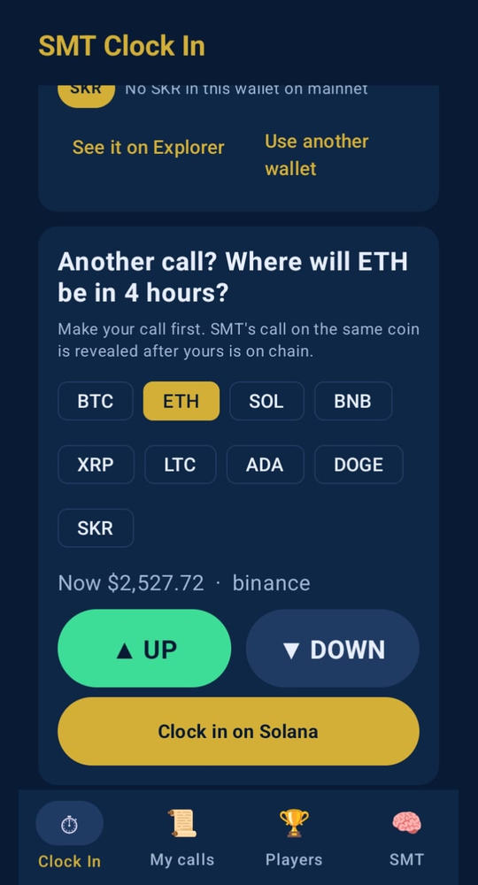
Pick one of 8 coins, or SKR. Call it UP or DOWN for the next 4 hours.
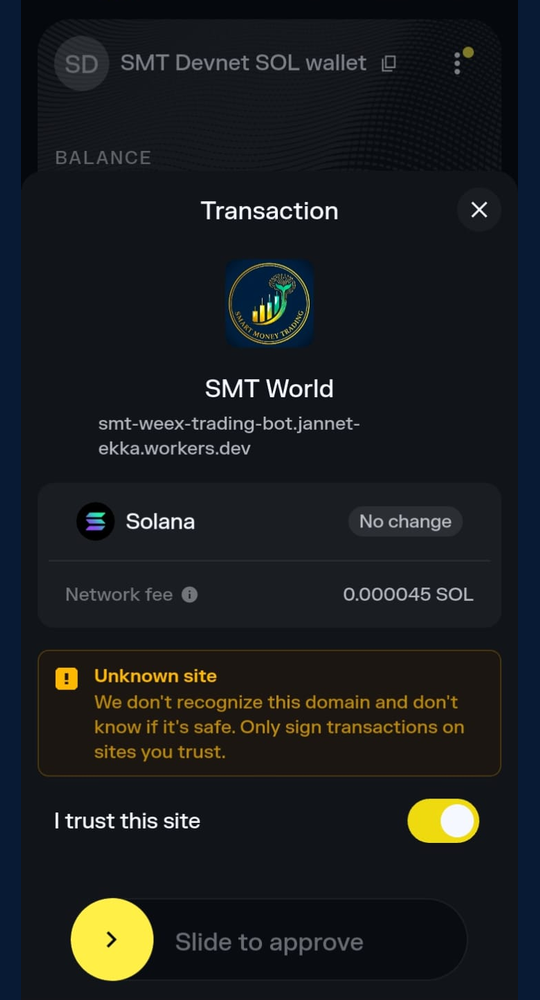
Your wallet (Phantom or Solflare) signs one devnet transaction through Mobile Wallet Adapter.
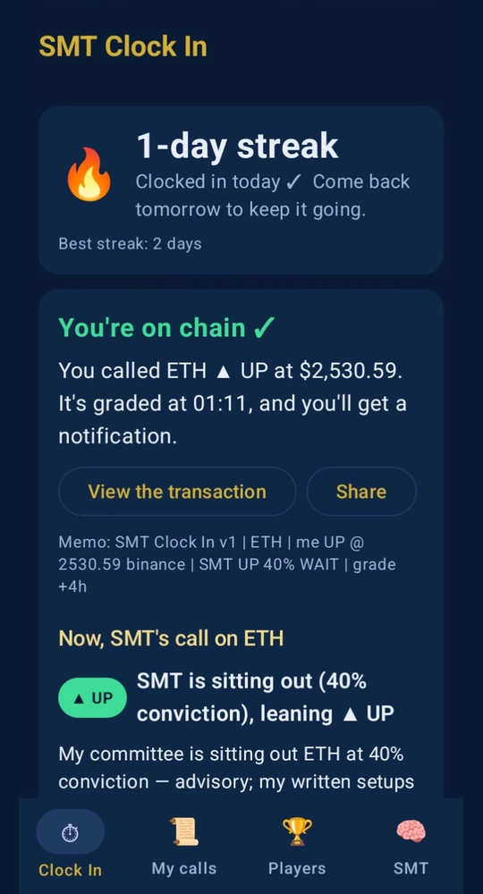
Only then does SMT reveal its own call on that coin, with its reasons.
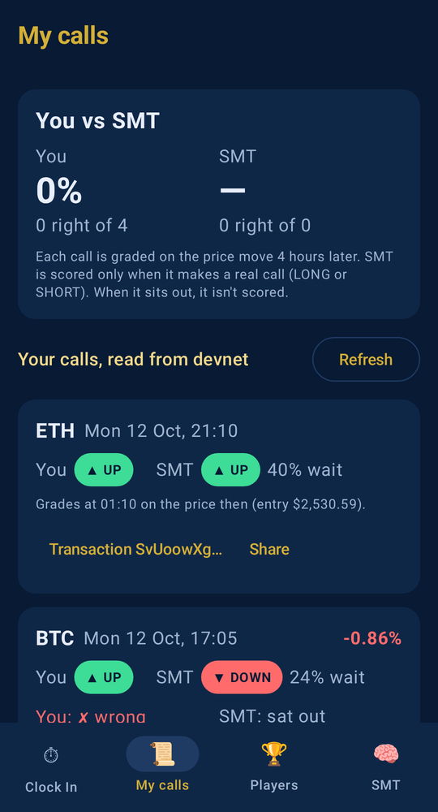
4 hours later the call is graded on the market price. You get a notification.
Your call and SMT's land in the same transaction, so neither can be written after the market moves.
The memo is plain text with the entry price and its source. Anyone can re-grade a call from Solana Explorer and public price data.
A second memo names one shared registry address. Your history and everyone's leaderboard are read back from Solana, so there's no server to trust.
Devnet only, paid with free SOL from the public faucet. No real money moves.
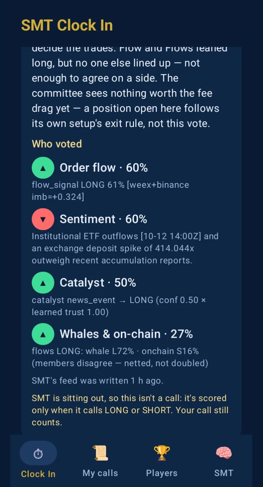
Miss a day and it resets. It survives a lost phone.
A notification when your call is graded, and what SMT did.
A running score. Beating a trading agent is a better hook than a price alert.
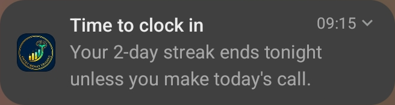
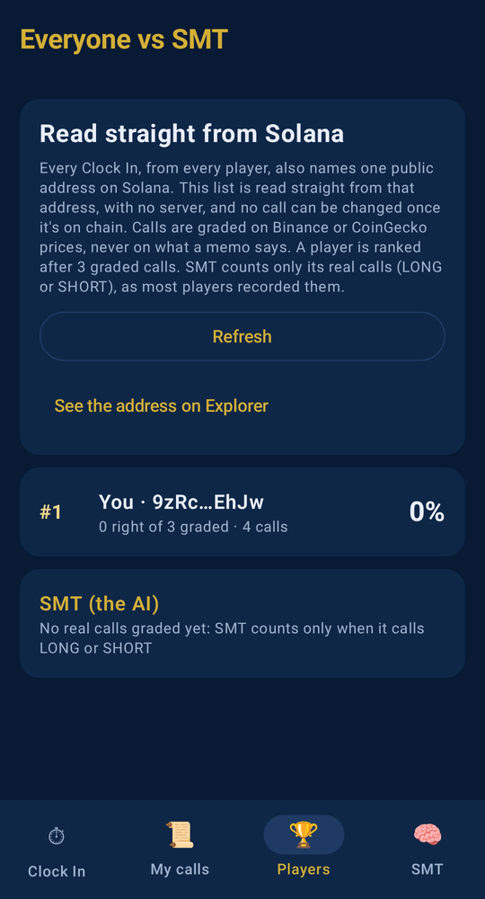
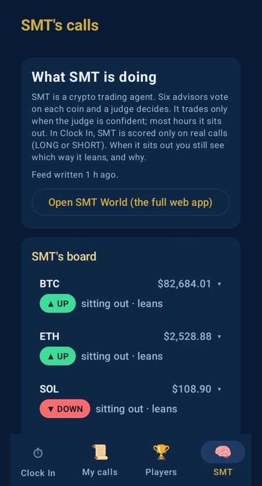
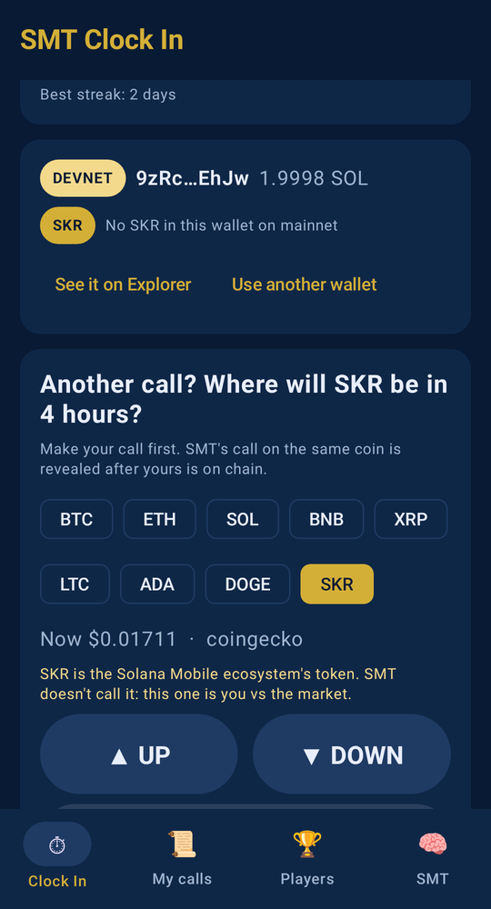
SKR is a ninth coin to call. SMT doesn't trade it, so it's you vs the market. The app reads your SKR balance on mainnet, read-only.
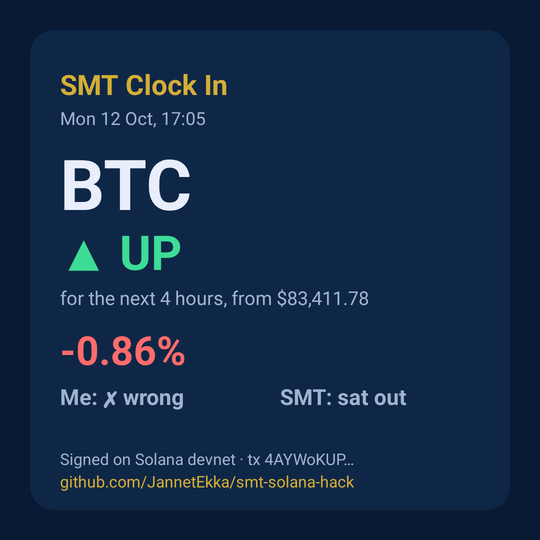
Any call can be shared as a card with its transaction.
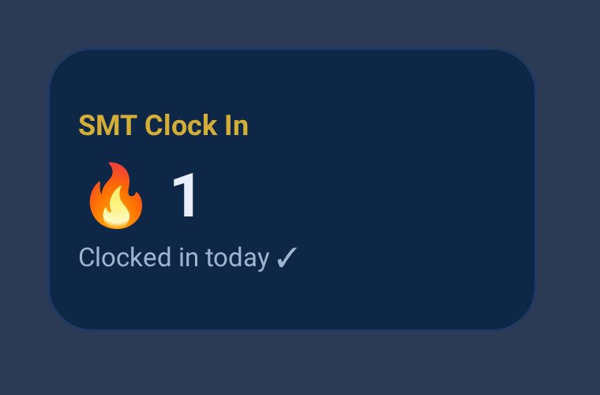
A home-screen widget keeps the streak in view. It reads the phone's cache, so it costs no network.
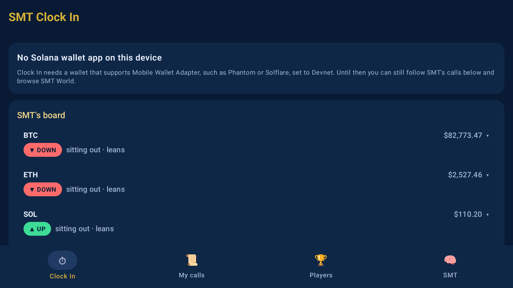
Every real call SMT makes lands on chain with a timestamp. A season of them is a track record its operator can't rewrite.
Publish on the Solana dApp Store and move the record to mainnet once the game is tuned.
The same app grows into SMT World on phones and TVs, where users follow the agent.